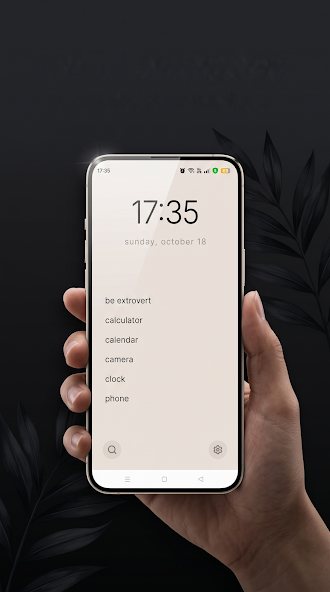

Minimalism as a lifestyle idea gets associated with empty rooms and capsule wardrobes, but the actual principle underneath it is simpler and more general than any particular aesthic: fewer things competing for your attention means each decision you do make gets made more deliberately. Apply that same principle to a phone — specifically to the one screen you look at every single time you unlock it — and you get a genuinely useful, practical idea, not just a visual style.
The chain: less choice, less fatigue, more intention
The core logic of digital minimalism runs in three steps:
- Less choice. Fewer options presented to you at any given moment.
- Less decision fatigue. Decision-making is a finite resource — the more small choices you make, the less sharp your judgment gets on the choices that follow, a well-documented general pattern in behavioral psychology often discussed under the idea of decision fatigue.
- More intentional action. With fewer options and less fatigue spent on trivial ones, the choices you do make — including what you pick up your phone to do — are more likely to reflect what you actually meant to do, rather than whatever was easiest or most visually available.
None of this requires citing a specific statistic to make sense. It's closely related to the broadly known "paradox of choice" idea — that beyond a certain point, more options tend to produce more hesitation and less satisfaction with whatever you end up choosing, rather than better outcomes. A phone home screen with thirty-plus icons is, in a small but repeated way, exactly that kind of choice overload, experienced dozens of times a day.
Why the home screen specifically matters
You could apply minimalist thinking to almost anything on your phone — your photo library, your notes app, your subscriptions. But the home screen is uniquely high-frequency. You might reorganize your photos once a year. You look at your home screen every single time you unlock your phone, which for most people is dozens of times a day. That frequency is exactly why it's worth the most attention: a small improvement repeated fifty times a day compounds into a much bigger effect than a large improvement applied once.
A cluttered home screen — icons from apps you forgot you installed, three different social apps, a few you only opened once — isn't just visually busy. Each icon is a tiny decision point. Even deciding not to tap something takes a sliver of attention. Multiply that by every unlock, every day, and you get a meaningful amount of low-grade mental overhead spent on nothing — just scanning a grid of options you didn't come to your phone for.
What a minimalist home screen actually removes
Trimming a home screen down to essentials does a few specific things, each tied to the chain above:
- Fewer reflexive taps. If an app isn't visible, the thumb has nowhere automatic to go. Opening it becomes a deliberate search rather than a reflex.
- Less visual noise to parse. A grid of 7–11 icons takes a fraction of a second to scan compared to a grid of 30+, which is itself a small but constant reduction in cognitive load.
- A forcing function for prioritization. Choosing which apps make the cut is itself a useful exercise — it makes you actually name what you use intentionally versus what's just sitting there out of habit.
Minimalism doesn't mean doing less — it means deciding more on purpose
A common misread of digital minimalism is that it's about restriction for its own sake — using your phone less, as a goal in itself. That's not really the point. The point is that most phone use isn't actually chosen; it's triggered by whatever's visually in front of you at the moment you unlock the screen. Minimalism, applied here, isn't about doing less with your phone — it's about making sure what you do with it was actually your decision, not a reflex aimed at whichever icon happened to be sitting closest to your thumb.
That distinction matters because it changes what "success" looks like. The goal isn't a home screen you're proud of for being empty. It's a home screen that, every time you glance at it, reflects what you actually use on purpose — which naturally tends to be a short list, because most people genuinely rely on a small set of apps (messaging, maps, camera, a calendar, one or two others) far more than the other twenty-five they've accumulated.
The app-limit mechanic as one concrete application

This is the specific idea Thin Launcher is built around: rather than leaving the "how minimal is minimal enough" question open-ended, it enforces a hard number. The free tier caps your home screen at 7 apps. Pro — a one-time purchase, not a subscription — raises that ceiling to 11, for people who find 7 a little too tight. Everything you don't put on the home screen is still fully on your phone; it's just in the app drawer, one search away instead of one tap away.
The reason a hard number works better than a vague intention to "use my phone less" is that it removes the chain's weakest link: willpower. You don't have to keep deciding, every day, whether today's home screen is minimal enough. You decided once, during setup, and the limit holds the line after that — the same way a fixed budget is easier to stick to than a vague intention to "spend less."
If you've read this far and you're specifically wondering how this connects to the feeds and notifications that make phones hard to put down in the first place, our piece on the psychology of doom scrolling goes into the trigger-and-reward mechanics in more depth. If you want the related idea of how constant low-effort content consumption affects attention more broadly, see what "brain rot" actually means. And if your main context is studying or work specifically, we've written dedicated pieces for students and working professionals.
Try a home screen with fewer decisions on it.
Get Thin Launcher on Google Play